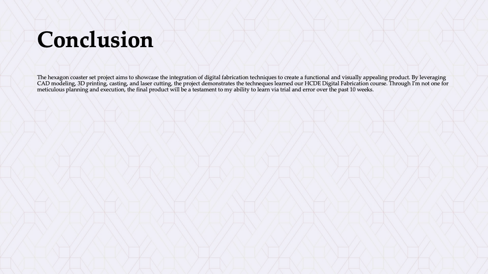

Final Project Proposal
Coaster Set
Concept
The project aims to create a modular hexagon coaster set, designed for both functionality and aesthetic appeal. The coaster set consists of individual hexagon-shaped coasters that can be interlocked to form larger coasters or unique patterns on a tabletop. The modular design allows users to customize the size and shape of their coaster arrangements according to their needs or preferences.
Intended Use Case
This is meant to be a decorative and interactive coffee table piece that guest can use and play around with. Perhaps it may be mass produced for offices, cafes, or restaurants. Its modular nature allows it to adapt to different table sizes and configurations while providing protection against drink condensation and scratches.
Breakdown of Tasks:
CAD Modeling:
Design hexagon coaster model in Fusion 360, including flat connectors for modular assembly.
Create two-part silicone mold design for casting coasters.
a6_connector.png
3D Printing:
Print molds for casting coasters using PLA material.
Print flat connectors for coasters using PLA material.
Casting:
Cast coasters using plaster material in the silicone molds.
Allow sufficient curing time for plaster.
Finishing:
Sand and polish plaster coasters for a smooth finish.
Assemble 3D printed flat connectors to coasters.
Laser Cutting:
Design and cut a box for storage and display of the coaster set.
Assemble laser-cut parts to create the box.

Timeline with Contingency Plans
Week 1:
Design and digitally fabricate molds for casting coasters.
Begin casting process, allowing sufficient time for curing.
May 17
Week 2:
Complete casting process and finish plaster coasters.
Design and 3D print flat connectors for coasters. May 17, 18. Get help on May 22nd if needed.
Week 3:
Assemble flat connectors to coasters. May 24, 25
Design and laser cut box for coaster set. May 25
Assemble laser-cut parts to create the box. May 25
Contingency: Memorial Day and the Day after.
Bill of Materials with Sourcing Schedule:
Silicone Mold Material: have it (Oomoo)
3D Printing Filament (PLA): have it
Silicone Casting Material: have it
Source from class or Ben Franklin.
Sandpaper and Polishing Compound: have it
Laser Cutting Material (Plywood): $20 from Home Depot
Coaster Specific Materials (most of which I have):
Envirotex Lite Pour On Resin($10),
Resin Epoxy Pigments ($10, amazon),
Graduated Plastic Cups,
Plastic cups,
Small Plastic Cups,
Crafts Sticks,
Disposable Gloves,
Gold Leaf Flakes ($6),
Drinking Straw,
(Inspiration from Elle and Jay)
Conclusion
The hexagon coaster set project aims to showcase the integration of digital fabrication techniques to create a
functional and visually appealing product. By leveraging CAD modeling, 3D printing, casting, and laser cutting,
the project demonstrates the techneques learned our HCDE Digital Fabrication course. Through I'm not one for meticulous planning and execution, the final product will be a testament to my ability to learn via trial and error over the past 10 weeks.
